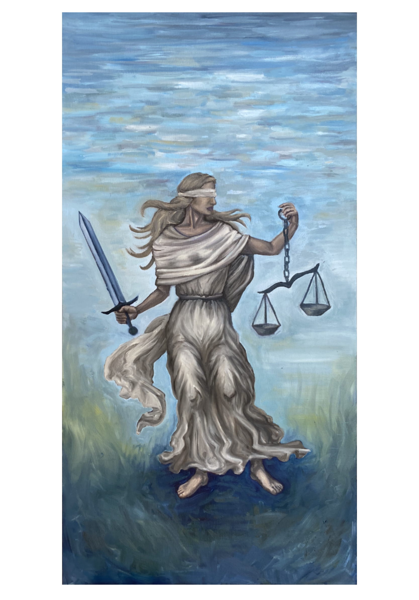
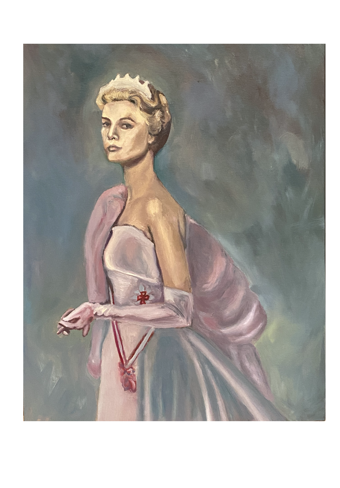
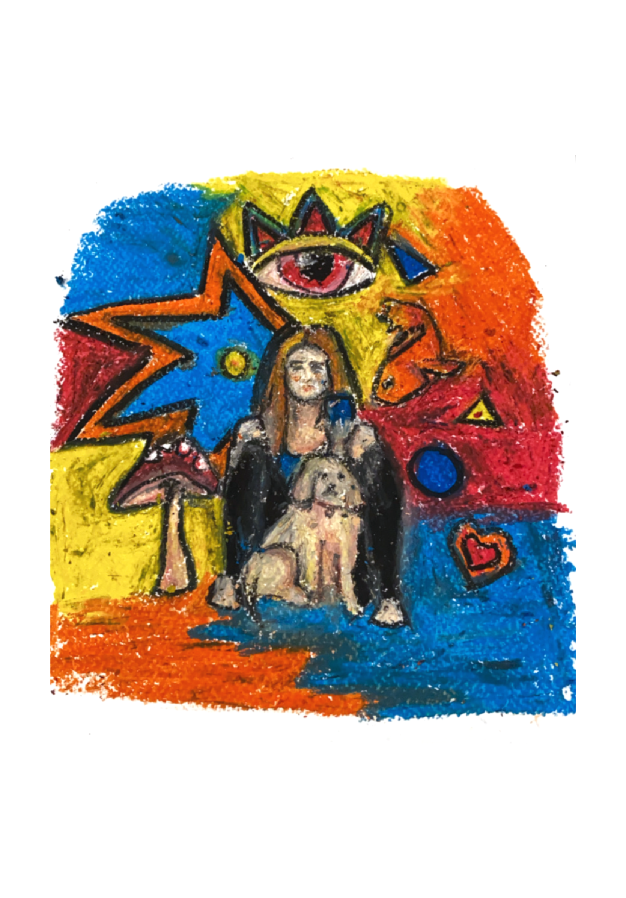

Gallery 1: Exploring Emotions

Micaela Blank's first painting in this series delves into the raw emotions experienced during pivotal life moments. The use of color and brushstrokes captures the intensity of the feelings portrayed.
Gallery 2: Nature's Palette

This piece highlights the vibrant colors found in nature. Micaela's technique brings out the beauty of the natural world, showcasing her talent for capturing the essence of landscapes.
Gallery 3: Abstract Realities

In this painting, Micaela explores abstract concepts, blending reality with imagination. The complex layers and textures invite viewers to interpret the piece in their own way.
Gallery 4: Timeless Beauty

This artwork recontextualizes Baroque figures in a modern setting, showcasing Micaela's skill in merging historical themes with contemporary styles.
Gallery 5: Mythological Echoes

Micaela draws inspiration from Greek myths, presenting them through a unique lens. This piece invites viewers to rediscover these ancient stories in a new context.
Gallery 6: Urban Reflections

This painting captures the essence of urban life, with its bustling energy and intricate details. Micaela's portrayal of cityscapes reflects the vibrancy and chaos of modern cities.
Gallery 7: Silent Serenity

In this serene piece, Micaela explores the quiet moments that often go unnoticed. The subtle hues and gentle brushstrokes create a calming effect, inviting contemplation.
Gallery 8: Dynamic Energy

This artwork is a vibrant explosion of color and movement, capturing the dynamic energy of life. Micaela's bold approach brings a sense of excitement and vitality to the canvas.
Gallery 9: Hidden Depths

Micaela's ninth piece in this series invites viewers to explore the hidden depths of the human psyche. The intricate details and rich colors reveal the complexity of our inner worlds.
Gallery 10: Ethereal Dreams

This dreamy painting transports viewers to an ethereal realm. Micaela's use of light and shadow creates a sense of otherworldly beauty, inviting imagination and wonder.
Gallery 11: Vibrant Visions

With bold colors and striking contrasts, this piece is a visual feast. Micaela's dynamic style and innovative techniques bring her vibrant vision to life.
Gallery 12: Whispers of Nature

This artwork captures the gentle whispers of nature, with soft colors and delicate details. Micaela's sensitivity to the natural world is evident in every brushstroke.
Gallery 13: Rhythms of Life

This piece explores the rhythms of life, with its flowing lines and dynamic composition. Micaela's ability to convey movement and energy is truly remarkable.
{kind=link}
{kind=link}
{kind=link}